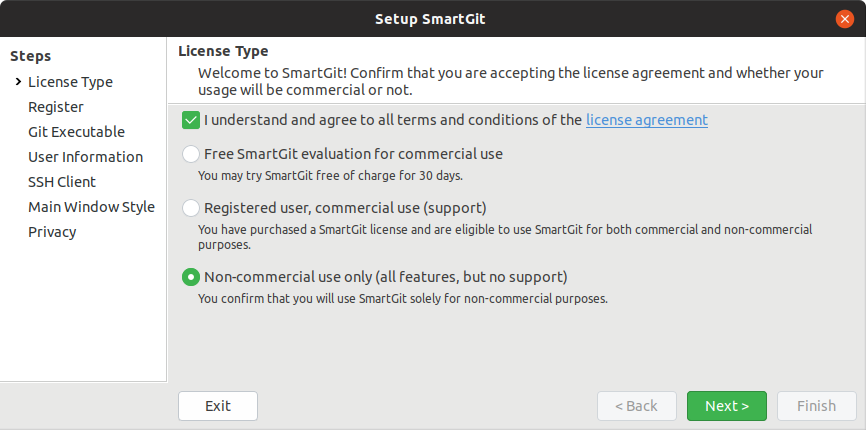

Mobile App Entwicklung
Lektion 2
Evaluation, Auswahl und Konfiguration
Lektion 02
Evaluation und Auswahl
Wo waren wir?
Wir haben:
- Evaluationskriterien festgelegt
- Kandidaten ausgesucht
- eine Evaluationsmatrix erfasst und teilweise ausgefüllt
Nächste Schritte
- Kandidaten installieren und testen
- Installation erfolgreich?
- IDE testen (debug/"Hot Reload")?
- Emulatoren integriert?

Evaluierte Kandidaten
Allgemeine Eindrücke
- Alle Umgebungen benötigten mehrere zusätzliche GBs diverse SDKs, Vorlagen, Emulatoren, usw.
- Mit gewissen Produkten konnte man effizient starten und entwickeln
Delphi
- Abschreckende Lizenzbedingungen
- ⛔️ Ab 5'000.- Firmeneinkommen wird eine kommerzielle Lizenz nötig
- ⛔️ IDE geht nur unter Windows
- ⛔️ Evaluation abgebrochen
Uno
- Musste viel installieren
- ⛔️ Am Schluss fehlte trotzdem noch "GenerateXamlTask"
- ⛔️ Evaluation abgebrochen
Avalonia
- Ging relativ einfach
- Bietet nicht so viel
- ⚠️ Nicht so klar wie man iOS oder Android als Target setzen kann
- ⛔️ Kein "Hot Reload" eingeschaltet
- ⛔️ Evaluation abgebrochen
Xamarin
- Ging auf Anhieb aus Visual Studio
- ⚠️ Unverändert gegenüber letztes Jahr
ReactNative
- Laufend mit nur wenig Fehlern
- ✅ "Hot-Reload" ging sofort auf iOS
- ⚠️ Lernkurve nicht ganz so flach, auch wenn man bereits React-Entwickler ist
Flutter
- ⚠️ Verwirrende Einführung; zu viele Möglichkeiten
- ⛔️ Anleitung war nicht ganz korrekt
- ⛔️ Neues Projekt Wizard ging nicht auf Anhieb
- ⛔️ Build ging nie vorwärts; einfache App konnte nicht ausgeführt werden
- ⚠️ Ging endlich vorwärts; Target-Liste instabil
- ✅ "Hot-Reload" ging auf alle Plattformen gut
Maui
- ✅ Ging auf Anhieb aus Visual Studio
- ✅ Mac, iOS und Android waren sehr leicht auszuführen
- ✅ "Hot-Reload" ging sofort auf alle Plattformen
Lektion 02
Umgebung einrichten
Was benötigen wir?
GitHub Einrichten
Einführung GitHub Issues
- Unterstützt die Projektführung
- Projekte
- Boards
- Issues
- Spalten/Status
- Aufgaben: Konto, Repository, Projekt, und ein Issue erstellen
Wo steht ihr?
- GitHub ist eingerichtet
- GitHub Projekt ist aufgesetzt
Einführung Git
- Pull vs. Fetch
- Push vs. Commit
- Local vs. Remote
- Merge vs. Rebase
- Working Tree vs. Stage vs. Stash

Fragen?

SmartGit
- Gratis für nicht kommerzielle Zwecke
- GUI für Git
- Git kann man auch mit VSC, WebStorm oder Kommandozeile benutzen
- SmartGit ist besser
- Herunterladen und installieren
- Ausführen
SmartGit Lizenz
Letzte Option wählen und bestätigen.
Repo(s) Herunterladen
- Repos:
- https://github.com/mvonballmo/APE_Docs
- https://github.com/mvonballmo/APE_Apps
- Eigenes Projekt-Repo
- In SmartGit,
Repository/Cloneselektieren und das URL eingeben - In SmartGit,
Repository/Cloneselektieren, GitHub als Hosting Provider einrichten, und dein eigenes Projekt selektieren
Wo steht ihr?
- GitHub ist eingerichtet
- GitHub Projekt ist aufgesetzt
- SmartGit ist eingerichtet
- "app" und "doc" Repositories sind bei euch lokal verfügbar
IDE Aufsetzen
- OS und Zielgerät feststellen
- Visual Studio 2022 installieren
- Emulator (Android) oder Simulator (iOS) einrichten
- Optional: Einrichten eines Geräts für die Entwicklung und Debugging
Wo steht ihr?
- GitHub ist eingerichtet
- GitHub Projekt ist aufgesetzt
- SmartGit ist eingerichtet
- "app" und "doc" Repositories sind lokal verfügbar
- Visual Studio ist installiert
- Ein Emulator ist eingerichtet
Wir sind bereit!
Bauen wir etwas zusammen!
Projekt erstellen
- ".NET MAUI App" wählen
- Drei Projekte werden erstellt
- "Shared" Projekt zielt auf .NET Standard
- Im Emulator Ausführen
Commit und Push
- Änderungen in Git "committen"
- Commit(s) nach GitHub "pushen"
Um ein lokal erstelltes Projekt mit GitHub zu verbinden, siehe How to Push an Existing Project to GitHub.
Wo steht ihr?
- Alle Werkzeuge sind installiert und eingerichtet
- Eure Code ist auf GitHub gesichert
Lektion 2: Themen
- IOC (Inversion of Control)
- Testing
Lektion 3: Themen
- Dialogs
- Styling
- Xamarin Forms
- Cross-Platform
- Navigation
- MVVM
- XAML für Forms
- Controls
- Commands
Lektion 4: Themen
- Notifications
- Local
- PUSH/Remote
Lektion 5: Themen
- LK1
- Hybrid Applikationen
- Interoperabilität mit dem Nativen Teil
- UI-Entwurf
- Ansatz Präsentieren
- Laufendes Beispiel erstellen
Lektion 6: Themen
- Einführung Sicherheit (Hash vs. Encryption, PKI)
- Mobile Sicherheit
- Biometrie
Lektion 7: Themen
- LK2
- Lokale Datenbank (SQLite)
- Logging
- Telemetrie
- Eigene Projekte ausbauen
- Reviews & Beratung
Lektion 8: Themen
- Eigene Projekte ausbauen
- Reviews & Beratung
Lektion 9: Themen
- Projekte präsentieren
- Themen nach Wahl
Dokumentationen
Die folgende Online-Referenzen sind sehr nützlich und werden statt einem Buch eingesetzt.
Übersicht Landschaft
| IDE | Languages | Frameworks | Build/Deploy | |
|---|---|---|---|---|
| Android |
Android Studio Eclipse NetBeans |
Java Kotlin C++ |
Google Play Service Dagger data-bind gson jdeferred |
PlayStore Gradle Maven |
| iOS |
xCode AppCode |
Swift Objective-C |
AlamoFire CryptoSwift SwiftyJSON SwiftyRSA PromiseKit |
TestFlight AppStore CocoaPods |
| Cross-Platform |
Visual Studio Rider WebStorm Visual Studio Code |
C# F# TypeScript |
Xamarin MAUI React Native Ionic Cordova (ehem. PhoneGap) NativeScript |
fastlane HockeyApp Artifactory Jenkins TeamCity Azure |
Geschichte Xamarins
- Die Linux .NET Laufzeitumgebung Mono wurde von der Firma Ximian entwickelt
- Aus Ximian wurde die Firma Xamarin
- Das Produkt Xamarin ermöglicht iOS/Android Apps mit C# mit Mono
- In 2016 wurde Mono von Microsoft gekauft
- Wird immer weiter in .NET integriert
- Wird in 2022 durch MAUI ersetzt/erweitert
Siehe den Wikipedia Eintrag dazu.
Xamarin mit Native UIs
- Xamarin.iOS & Xamarin.Android Projekte
- Ein 1:1 Mapping zu den jeweiligen Plattform-APIs
- Neue APIs werden innerhalb 24 Stunden angeboten
- Core Elemente werden geteilt
- UIs sind Plattform-spezifisch und werden nicht geteilt (ausser mit Hybrid-UIs)
Diagramm Xamarin Native

Xamarin Forms
- UIs werden geteilt und mit XAML geschrieben
- Bietet
DependencyService(IoC) für plattformabhängige Features an - Bietet Schnittstellen für gemeinsame Features (wie z.B. Dialogs, Notifications, usw.) an
- Bietet Unterstützung für Navigation an
Beispiele Xamarin Forms

Übersicht Architektur

.NET Standard
- Definiert ein gemeinsames API oder Schnittstelle
- Je höher die Version desto breiter die API Oberfläche
- Version 2.1 ist die neuste Version
- Mono implementiert .NET Standard for iOS/Android
- .NET Framework und .NET implementieren sie for Windows
- .NET 6 is die allerneuste und aktuelle LTS* Version (Nov. 2021)
LTS = Long-Term Support
.NET Standard APIs
- File (System.IO)
- Collections & LINQ
- Task &
async/await - Http (Client) (System.NET)
- Und viel mehr...
Erster Blick
- Einfaches Applikation ausführen und debuggen
- Tests ausführen und debuggen
Könnt ihr das auch?
Noch nicht...
...aber gleich!
Navigation und Tabs
Navigation
Seiten auf dem "View Stack" setzen
// App.xaml.cs
MainPage = new MainPage();
// ItemsPage.xaml.cs
await Navigation.PushAsync(new ItemDetailPage(new ItemDetailViewModel(item)));
// NewItemPage.xaml.cs
await Navigation.PopModalAsync();
async und await werden wir jetzt einfach benutzen und in einer späteren Lektion genauer erklären
Xamarin Forms: Tabs
Populate pages as tabs in MainPage.xaml.cs in the TabbedPage.Children
<TabbedPage.Children>
<NavigationPage Title="Browse">
<x:Arguments>
<views:ItemsPage />
</x:Arguments>
<NavigationPage.Icon>
<OnPlatform x:TypeArguments="FileImageSource">
<On Platform="iOS" Value="tab_feed.png"/>
</OnPlatform>
</NavigationPage.Icon>
</NavigationPage>
<NavigationPage Title="About">
<x:Arguments>
<views:AboutPage />
</x:Arguments>
<NavigationPage.Icon>
<OnPlatform x:TypeArguments="FileImageSource">
<On Platform="iOS" Value="tab_about.png"/>
</OnPlatform>
</NavigationPage.Icon>
</NavigationPage>
</TabbedPage.Children>
Xamarin Forms UI
Weitere UI-Elemente sind:
Wo steht ihr?
- Alle Werkzeuge sind installiert und eingerichtet
- Eure Code ist auf GitHub gesichert
- Ihr könnt eure App im Emulator und auf dem Gerät
- ausführen
- debuggen
Können wir jetzt endlich
mehr Mobile-Entwicklung lernen?
Ja! Nächstes mal...